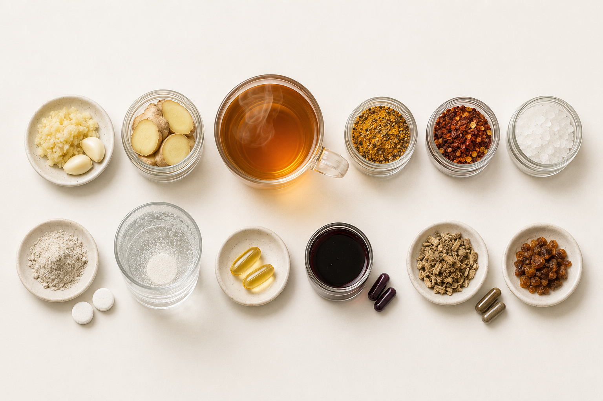

1
Garlic, peeled and crushed
Crushing activates alliinase, which converts alliin into allicin, the antiviral compound. Garlic has shown fewer sick days than placebo in a 146-person trial.
Josling, Adv Ther 20018 plant-based ingredients, 2 vitamins, 2 minerals, and 1 bee-derived ingredient with cited clinical studies demonstrating efficacy.
Save about $25, 3 hours of work, and 1–2 days of waiting.
Prices checked July 17, 2026 for the lowest-priced relevant pack found. Before tax; prices and availability change. Time includes 1 hour to order all the right things and 2 hours to prepare; delivery takes 1–2 days.

Crushing activates alliinase, which converts alliin into allicin, the antiviral compound. Garlic has shown fewer sick days than placebo in a 146-person trial.
Josling, Adv Ther 2001Ginger showed it blocks viral attachment in airway cells.
Chang, J Ethnopharmacol 2013Soothes the throat and keeps your mucous membranes hydrated.
Curcumin quiets inflammatory signaling, but on its own almost none of it survives digestion. Piperine, from the pepper, slows the enzymes that clear curcumin, so far more of it reaches your blood.
Shoba, Planta Med 1998Capsaicin thins mucus and opens nasal passages.
Gargling cut upper respiratory infections in a 387-person randomized trial.
Satomura, Am J Prev Med 2005Strong evidence from clinical trials that it interferes with viral replication when taken within 24 hours of the first symptom, and that it cut cold duration.
Hemilä, Open Forum Infect Dis 2017Across numerous trials, it showed support for immune cell function and trimmed cold duration.
Hemilä & Chalker, Cochrane 2013Contains anthocyanins, mainly cyanidin 3-glucoside and cyanidin 3-sambubioside, where studies showed they interfere with viral replication. Pooled trials found shorter, milder symptoms when started at onset.
Hawkins, Complement Ther Med 2019across 24 trials, there’s some evidence that it raises white blood cell activity and cytokines signaling
Karsch-Völk, Cochrane 2014Compounds like flavonoids and polyphenols show antiviral and anti-inflammatory activity, with symptom remission by day 3 of a cold in a controlled trial.
Esposito, Phytomedicine 2021what to take and when, across the first 48 hours.